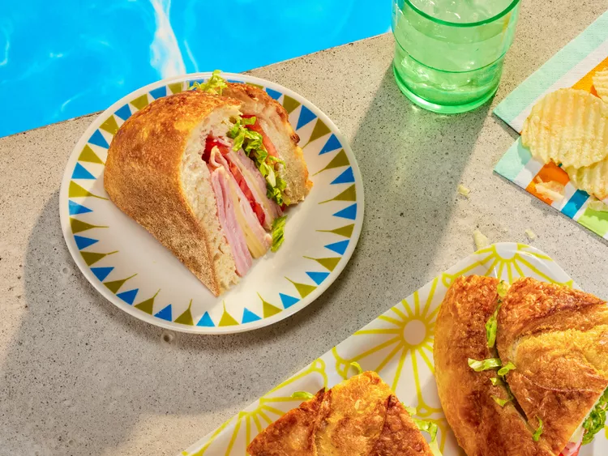

Sándwich

Descripción
When I was a kid, we often spent all day at the community pool. We’d leisurely snack on popsicles and chips, until it was time for lunch. No one wanted to dry off, get dressed, and go home for lunch. Mayonnaise didn’t travel well and wasn’t safe under the summer sun. Peanut butter sandwiches were a solution, but also suffered under the heat.
Ingredientes
- 1 pan redondo
- 2 cucharadas de mantequilla
- 2 cucharadas de mostaza amarilla
- 2 tazas de lechuga iceberg rallada
Pasos
- Preheat the oven to 350 degrees F (175 degrees C).
- Cut a wide circle out of the bread loaf top like you’re making a soup bread bowl. Carefully remove and set aside the loaf top.
- Hollow out the bread interior, being careful not to break through the sides. The loaf interior can be used to make croutons, so there’s no waste.
- Melt butter with mustard in the microwave for 15 seconds in a small bowl. Mix well.
- Brush butter mixture onto the exterior of the bread loaf and top; place loaf and top on a baking sheet.